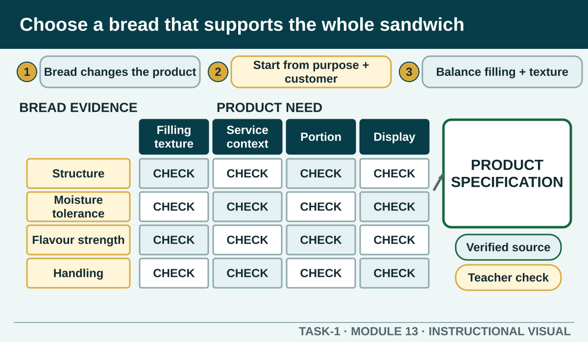

Compare bread characteristics and design a sandwich specification that balances structure, eating quality, customer information, portion, presentation and safe production.
Learning intention
What success looks like
Links bread to filling and service context
Explains flavour, texture, moisture and structure
Uses observable specification language
Does not promise dietary or allergen suitability without confirmation
Core ideas
Build the complete picture
1
Bread choice changes the whole product
2
Design begins with purpose and customer information
3
Balance filling, flavour and texture
4
Manage moisture and structure
Visual explanation
Choose a bread that supports the whole sandwich

Rows compare neutral bread characteristics such as structure, moisture tolerance, flavour strength and handling. Columns connect filling texture, service context, portion and presentation. A product-specification panel shows verified information and teacher-confirmation gates.
Worked example
Manage moisture and structure
High-moisture fillings, warm ingredients, excess spread and long holding can weaken bread and reduce quality. Plan the authorised assembly order, ingredient drainage or preparation, spread and service timing so the product remains stable.
Observed evidence: A fictional sandwich trial follows the teacher-approved ingredient list, but the bread softens and the filling slides when the sample is lifted for its planned service check. Decision and reason: The learner identifies a structure and moisture problem rather than blaming the bread alone. Safe action: They protect the food, compare the current product specification and ask the teacher whether a different authorised layer order, preparation step or bread choice may be tested. Result: The approved second trial holds together more reliably without an invented recipe change. Next check or record: The learner compares handling, visible moisture and presentation, then records the exact authorised change and observed result for the product specification.
Question the room
Which bread decision is most defensible?
Choose the bread that matches the filling weight, moisture, service style and authorised product standard.
Choose the largest bread so more filling can always be added.
Use whichever loaf was opened first, even if it is not the specified product.
Apply
Sandwich production and waste sequence
Brief: prepare four consistent ready-to-eat salad sandwiches using the teacher-authorised recipe. The exact ingredients, quantities and local presentation standard remain in that recipe.
Order all nine stages.
Check the sequence.
Name one waste-prevention decision and one food-safety control that must operate together.
Exit ticket
Action · evidence · next step
Draft a supplementary design specification for a teacher-nominated sandwich brief. Explain the bread choice, filling balance, moisture and structure controls, portion, presentation, verified customer information and what requires teacher authorisation.
One action I would take
The evidence I would check
The person or source I would confirm with
My next improvement
1 of 8
Speaker notes and delivery prompts
Open with this purpose: Compare bread characteristics and design a sandwich specification that balances structure, eating quality, customer information, portion, presentation and safe production.
Use Bread choice changes the whole product to connect prior learning to the first observable workplace decision.
Model Manage moisture and structure by walking through this supplied example: Observed evidence: A fictional sandwich trial follows the teacher-approved ingredient list, but the bread softens and the filling slides when the sample is lifted for its planned service check. Decision and reason: The learner identifies a structure and moisture problem rather than blaming the bread alone. Safe action: They protect the food, compare the current product specification and ask the teacher whether a different authorised layer order, preparation step or bread choice may be tested. Result: The approved second trial holds together more reliably without an invented recipe change. Next check or record: The learner compares handling, visible moisture and presentation, then records the exact authorised change and observed result for the product specification.
Ask: Which bread decision is most defensible? Confirm the strongest response as Choose the bread that matches the filling weight, moisture, service style and authorised product standard..
Listen for this misconception: Size alone does not establish portion, balance, handling or the authorised standard.
Move into Sandwich production and waste sequence, then collect the saved response and finish with the source boundary: Authorised source note: Source basis: authorised Cycle 1 bread types, sandwich ingredients, preparation, storage and presentation content. Exact products, dietary claims, allergen controls, portions and presentation standards remain Teacher to confirm.